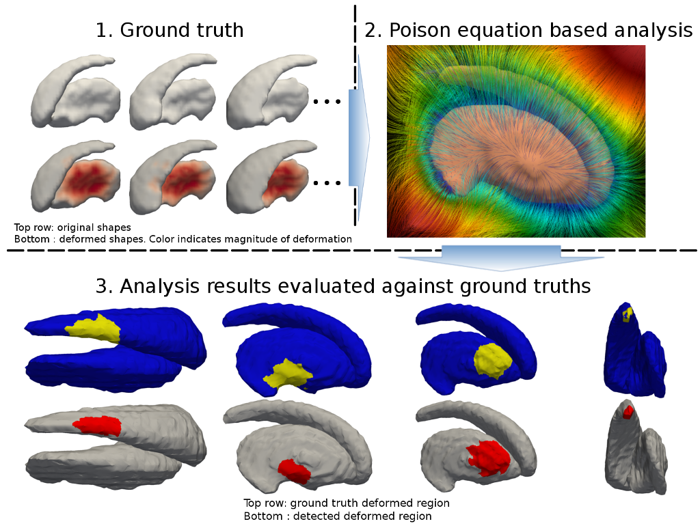
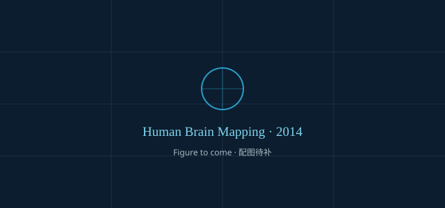
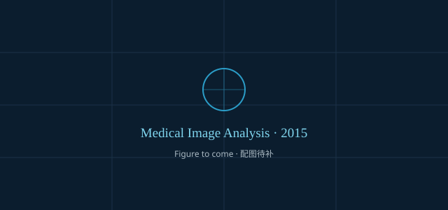
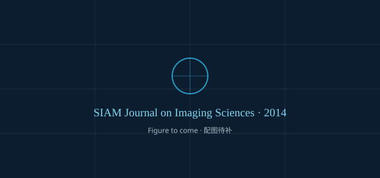

By Method · 04
Statistical Shape Analysis
Quantitative morphometry with validation: Poisson-equation shape analysis, multi-scale wavelet representations, depth-ordering, and the argument that shape analysis itself needs careful validation.
Overview
Quantitative morphometry with validation: Poisson-equation shape analysis, multi-scale wavelet representations, depth-ordering, and the argument that shape analysis itself needs careful validation.
- 3D Poisson morphometry with quantitative validation (MedIA 2016)
- Multi-scale wavelet representation for arbitrary topology (MedIA 2012)
- SPoM software released with Docker image
05 · Selected work
Selected work
Each card: figure on top, key points below.
01

Statistical shape analysis using 3D Poisson equation — a quantitatively validated approach
Medical Image Analysis · 2016
- Novel morphometry based on the 3D Poisson equation.
- First quantitative validation framework for shape analysis methods.
02

Multiscale 3D shape representation and segmentation with applications to hippocampal/caudate extraction from brain MRI
Medical Image Analysis · 2012
- Multi-scale wavelet decomposition for shapes of arbitrary topology.
- Applied to hippocampus and caudate extraction from MRI.
03

Shape analysis, a field in need of careful validation
Human Brain Mapping · 2014
- Position paper: shape analysis requires careful validation.
- Proposes validation methodology for morphometry.
04

Shape analysis based on depth-ordering
Medical Image Analysis · 2015
- Depth-ordering gives shapes a natural inside-outside description.
- Topology-aware representation for complex geometries.
05

Statistical shape analysis of neuroanatomical structures via level-set–based shape morphing
SIAM Journal on Imaging Sciences · 2014
- Level-set based shape morphing for population studies.
- Correspondence-free statistical analysis of neuroanatomy.